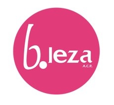
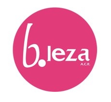
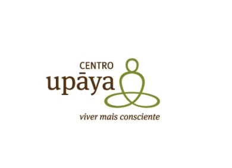
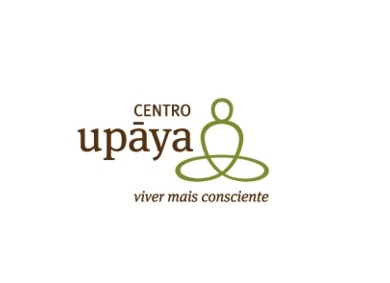

Serviços
Contabilidade Organizada
Apuramentos de impostos

Gestão de Clientes

Consultoria

Recursos Humanos
A “FM Consultores Associados” foi constituída em 25 de Maio de 1990.
O seu fundador Fernando Mateus é licenciado em Organização e Gestão de Empresa, inscrito da ordem dos Contabilistas Certificados desde 4 de agosto de 1987 com o numero 23776. É membro de Órgãos Sociais de diversas empresas privadas tendo iniciado a sua atividade profissional chefiando os Serviços de Contabilidade da Associação Industrial Portuguesa.
Desde da sua fundação veio sempre a crescer e conta com uma grande carteira de clientes de diferentes setores.
 
 


 
